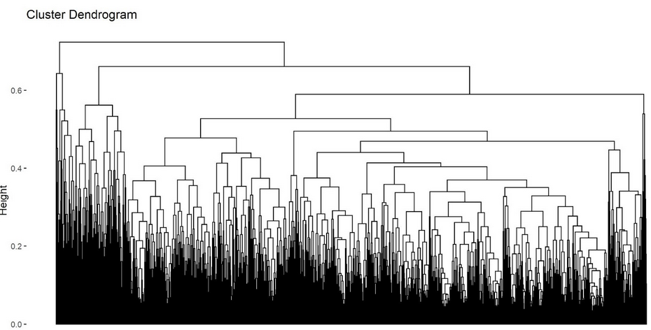

Re-Affirming and Discovering Risk and Protective Factors of Victimization
An Exploratory Criminology Study
Co-Authors: Haley Puddy and Hoda Eslafadi
Dataset from The American Health College Association-National College Health Assessment
Our analysis plan includes using secondary data collected from the largest known dataset on the health of college students called The American Health College Association-National College Health Assessment (ACHA-NCHA III). It is a nationally recognized research survey consisting of 52 items on college student’s health habits, behaviors, and perceptions. The data used for this project will be from the Spring of 2022, where 69,131 U.S. college students from across the country participated and completed the survey. Descriptive statistics using t-tests and chi-squares will be used as well as logistic regression models to measure what risk and protective factors have a positive or negative effect on victimization. Additionally, interaction and moderation effects will be used to determine if any combination of risk or protective factors exacerbate the effects on victimization.
What risk factors increase the likelihood of victimization for college students?
What protective factors decrease the likelihood of victimization for college students?
DV: Victimization (violent, sexual, IPV) IV(s): Risk & Protective factors for victimization
Risk factors: Engagement in risky behaviors (sex, alcohol usage, partying, fighting, and drug usage) Mental health problems
Protective factors: Overall health Healthy decision making Social connectedness Sleep health Safe driving
Controls: race/ethnicity, relationship status, gender
The purpose of this study is to reaffirm and discover what risk and protective factors increase or decrease the likelihood of victimization among a large sample of college students. There is a wealth of knowledge in this area showing that mental health problems and engagement in risky behaviors, like partying, sex, alcohol usage, and drug usage, significantly increase one’s likelihood of being victimized (Azimi & Daigle, 2021; Turanovic et al., 2018). Additionally, previous research has found social connectedness to be one of the strongest protective factors against victimization (McLoughlin et al., 2019; Kast et al., 2016). This research goes in line with social control and bond theories that argue that individuals are prevented from engaging in delinquency, and thus victimization, by having strong bonds to society, family, friends, and conventional activities (Hirschi, 1969). Literature is lacking, however, on protective factors related to overall health and propensity to make safer decisions. This study aims to contribute to the literature by reaffirming what is already clear about the risk and protective factors of victimization, as well as adding to the literature about additional protective factors that may be negatively associated with victimization. The results of this study have potential to build upon the well-researched base on victimization and suggest new protective factors for other researchers to take a closer look at.
Method: Heirarchical clustering with Gower’s Distance
Unsupervised learning methods such as hierarchical clustering is typically not done with labeled or structured data. Although this Stata file is very well structured, we trust the process will vet our regression findings and illuminate new research areas to explore. The nature of Gowers allows for different data types by scaling the similarity or dissimilarity between variables on a 0 to 1 binary value. We chose the computational method of Gowers matrix rather than similarity because a majority of inputs are ordinal categorical data types, with some nominal and discrete integer responses. A majority of the categorical inputs are binary. This allows for a more intuitive interpretation of the resulting clusters. For linkage computation, we chose complete linkage for a more balanced dendrogram.
I chose agglomerative clustering over divisive clustering because I am interested in a larger number of smaller clusters as opposed to the reverse of fewer and larger clusters. In real business or research scenarios, data analysts often compare the results of both methods before moving on to the next stage of the modeling/discovery phase.
Missingness
Due to the nature of survey data and the high proportion of missing answers, missingness must be meaningfully dealt with despite the ability of Gowers to deal with missingness. A high proportion of missingness will cause the clustering to find unreliable dissimilarities. Additionally, the common methods of list-wise deletion and mean/median imputation were eliminated as decent methods for the purposes of clustering. This is due to the non-random variation that often characterizes missingness in survey data. To preserve the variance, Multiple Imputation by Chain Equations (MICE) was utilized. We chose the random forest MICE method for its ability to preserve the distribution, variance, accuracy, and uncertainty in data with a high proportion of missingness. We rely on a large number of cases (over 3000 rows) to offset the probability that bias was introduced as a function of the amount of missingness and imputation. In real business and research scenarios, care should be taken to evaluate the sensitivity and quality of the imputation method by testing and comparing against other methods.
Selecting optimum number of clusters
Determining the optimum number of K clusters is important to the aims of the research and should serve the internal and external validity of the project. The method of choosing K and how to assess the chosen method’s performance are important aspects to projects in professional and research settings. We used many methods including visually inspecting the dendrogram, silhouette plots, and an elbow plot to determine the optimal number of K clusters.
 Lastly, our decision to rely on 8 clusters is supported by our visual analysis of the plain dendrogram (Figure 1). This dendrogram is noticeably convoluted and complex because of the sheer number of rows included. In any case, we believe it is necessary to sacrifice simplicity and interpretability in order to combat overfitting that is introduced via the inclusion of all 36 variables. Immediately it is clear some outliers are causing very small clusters to form that likely offers very little insight to our research. Three clades, both on the far left and far right side of the dendrogram, have the smallest number of leaves and are the top two highest heights of all the clades. We rely on 8 because both the Y-axis at height five emerge 8 distinct groups in the dendrogram (including the outliers). It should be noted that K = 8 should merely be a starting point.
Findings
The analysis revealed disproportionate memberships across eight clusters, with large variances in case numbers, suggesting biases and challenges in creating distinct clusters. The eighth cluster was deemed unusable due to having only one case. The data allowed for easier comparison of cluster means, particularly in victimization metrics. Cluster one, with the lowest victimization metrics, and cluster five showed high levels of well-restedness, aligning with a positive correlation between sleep and decreased victimization odds. However, cluster seven contradicted this trend, showing high sleep and victimization levels.
The analysis found no strong positive correlation between the number of sexual partners and victimization, with clusters showing varied victimization rates regardless of their sexual partner means.
Volunteering was identified as a risk factor in the regression models. Clusters with low victimization rates generally had low volunteering means, except for cluster six, which was an anomaly.
The analysis suggested that questioning sexuality might be a risk factor for victimization. Clusters showed varying correlations with sexual orientation and victimization rates. The study’s decision to limit the analysis to eight clusters may have restricted insights, especially considering that the survey response for sexual orientation was a nine-level factor variable. The large size of some clusters likely diluted and spread key factors across groups, obscuring potential insights.
Being single was found to be a risk factor for victimization, with clusters having higher victimization rates more likely to have medians indicating single status. However, some anomalies were noted.
There was no clear correlation between time spent playing sports and victimization rates across clusters.
The analysis, while highlighting some correlations, also underscores the complexity and variability of the relationship between sexual orientation and victimization. The discrepancies between the regression findings and the cluster analysis suggest a need for further, more granular investigation, possibly with a larger number of clusters or different analytical approaches.
Reflection
While normally the a priori needs of interpretable or predictive modeling crucially require testing and review of collinearity and correlation among variables, this was not included in the hierarchical clustering process. To conserve time and effort, we focused on methods learned in class that we do not have established knowledge on. In a real life scenario, we would use methods to test collinearity either with Principle Component Analysis or a simple correlation matrix. Additionally, more care would be taken to meaningfully analyze and strategize outliers and skewness. For example, the linkage method chosen here was complete linkage. In hindsight, Ward’s method seems to be a better choice as it is more suited to outliers and is less sensitive to noise. Additionally, scaling/normalizing the data was skipped in the interest of time. In hindsight, this step is very crucial because some inputs in the cluster statistics show large differences between the median and mean. Skewness was not adequately addressed. This is certain to have impacted the amount of reliable knowledge from the analysis.